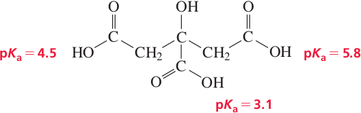

Polyprotic Acids
Acids such as HF, HCl, HNO3, and acetic acid CH3CO2H are all capable of donating one proton and so are called monoprotic acids. Other acids, called polyprotic acids are capable of donating more than one H+.
A diprotic acid (symbolized by H2A) can undergo one or two dissociations depending on the pH. Each dissociation has its own dissociation constant, Ka1 and Ka2.
H2A (aq) + H2O(l) ⇌ H3O+ (aq) + HA−(aq) Ka1
HA− (aq) + H2O(l) ⇌ H3O+ (aq) + A2−(aq) Ka2
The first dissociation constant is typically greater than the second, i.e. Ka1 > Ka2. For example, the weak unstable carbonic acid (H2CO3) can lose one proton to form bicarbonate anion (HCO3−) and lose a second to form carbonate ion (CO32−). Both Ka values are small, but Ka1 > Ka2.
As an example consider phosphoric acid, H3PO4. This molecule has three hydrogen atomt that can be ionized, which makes it a triprotic acid. For each ioniziation we can write an equilibrium constant Ka:
Ka1 > Ka2 > Ka3; Once a proton has been removed from phosphoric acid, the second ionization is harder, H2PO4− is a weaker acid, and the removal of a proton from HPO42− is still harder, that is that is the hydrogen phosphate ion is a weak acid. We can sum up by saying that
Ka1 is greater than Ka2 and Ka3; The majority of the H3O+ released comes from the first ionization;
The ionization of H2PO4− is reduced and we can assume that [H2PO4−] = [H3O+].
Assuming that [H2PO4−] = [H3O+], the second ionization constant Ka2, is reduced to:
[HPO42−] ≈ Ka2
Thus the pH is essentially given by the first ionization.
Sulfuric acid, H2SO4
Sulfuric acid behaves as a strong acid in the first ionization and as a weak acid in the second. Hence in solution, sulfurinc acid is completely ionized to HSO4−, which is further ionized accordind to the secon ioniziation constant Ka2.
| Name | Formula | Ka1 | Ka2 | Ka3 |
|---|---|---|---|---|
| Phosphoric acid | H3PO4 | 7.5 x 10−3 | 6.2 x 10−8 | 4.8 x 10−13 |
| Arsenic acid | H3AsO4 | 5 x 10−3 | 8 x 10−8 | 6.2 x 10−10 |
| Glycine | H2NCH2CO2H | 4.6 x 10−3 | 2.5 x 10−10 | |
| Sulfuric acid | H2SO4 | Large | 1.2 x 10−3 | |
| Sulfurous acid | H2SO3 | 1.5 x 10−2 | 1.0 x 10−7 | |
| Oxalic acid | H2C2O4 | 6.5 x 10−2 | 6.1 x 10−5 | |
| Ascorbic acid (vitamin C) | H2C6H6O6 | 7.9 x 10−5 | 1.6 x 10−12 | |
| Citric acid | H3C6H5O7 | 8.4 x 10−4 | 1.8 x 10−5 | 4.0 x 10−7 |
| Carbonic acid | H2CO3 | 4.3 x 10−7 | 4.8 x 10−11 | |
| Hydrosulfuric acid | H2S | 1.0 x 10−7 | ~ 10−19 |
Citric acid
An organic example of a triprotic acid is citric acid, which can successively lose three protons to finally form the citrate ion.
The first pKa (for the COOH group in the center of the molecule) is lower than the pKa of acetic acid.
The third pKa is greater than the pKa of acetic acid.
Citrus fruits are sources of citric acid. Lemon juice, for example, contains 5–8% citric acid.
Acid Rain
Acid rain means rain having a pH lower than that of natural rain (pH 5.6). Natural rain dissolves carbon dioxide from the atmosphere to give a slightly acidic solution. The pH of rain in eastern North America and western Europe, however, is approximately 4 and sometimes lower. This acidity is primarely the result of the dissolving in rain-water of sulfur oxides and nitrogen oxides from human activities. In the northeastern United States, the strong acid components in acid rain are about 62% sulfuric acid, 32% nitric acid, and 6% hydrochloric acid. The sulfuric acid in acid rain has been traced to the burning of fossil fuels and to the burning of sulfide ores in the production of metals, such as zinc and copper. Coal, for example, contains some sulfur mainly as pyrite, or iron(II) disulfide, FeS2. When this burns in air, it produces sulfur dioxide.
4FeS2 (s) + 11O2 (g) ⟶ 2Fe2O3 (s) + 8SO2(g)
In the presence of dust particles and other substances in polluted air, the sulfur dioxide oxidizes further to give sulfur trioxide, which reacts with water to form sulfuric acid.
2SO2(g) + O2(g) ⟶ 2SO3(g)
SO3 (g) + H2O(l) ⟶ H2SO4 (aq)
Almost all of the sulfuric acid dissociates into the ions H3O+, HSO4−, and SO42−. The first ionization of H2SO4 is complete; the second ionization (that of HSO4−) is partial (Ka2 = 1.1 x 10−2). Acid rain can be harmful to some plants, to fish (by changing the pH of lake water), and to structural materials and monuments (Figure 16.6). Marble, for example, is com- posed of calcium carbonate, CaCO3, which dissolves in water of low pH.
H3O+ (aq) + CaCO3 (s) ⟶ Ca2+ (aq) + HCO3− (aq) + H2O(l)
It is instructive to calculate the pH of natural rain— that is, water saturated with carbon dioxide from the atmosphere. For this, you need to solve two equilibrium problems. First, you need the equilibrium for the solution of CO2 in water.
CO2 (g) + H2O(l) ⇌ H2CO3 (aq)
K = [[H2CO3] / PCO2 = 3.5 x 10−2
Here [H2CO3] represents the concentration of the molecular species formed when CO 2 dissolves in water. The partial pressure of CO2 in the atmosphere is 0.00033 atm. If you substitute this for PCO2 and solve for [H2CO3], you obtain 1.2 x 10−5 M. (Note that the equilibrium-constant equation involving PCO2 is essentially Henry’s law, discussed in Section 12.3.) Now you need to account for the acid ionization of H2CO3. You look only at the first ionization, which produces almost all of the H3O+.
H2CO3 (aq) + H2O(l) ⇌ H3O+ (aq) + HCO3− (aq)
Ka1 = [H3O+] [HCO3−]/[H2CO3] = 4.3 x 10−7
Denoting [H3O+] = [HCO3− ] by x, you can write the equilibrium equation
x2/(1.2 x 10−5 − x) = 4.3 x 10−7
Making the usual assumption about neglecting x in the denominator, you obtain x = [H3O+] = 2.3 x 10−6. This assumption and the neglect of the self-ionization of water affect the answer in the second significant figure. Retaining one significant figure, pH = −log(2 x 10−6) = 5.7, which is essentially what we gave earlier for the pH of natural rain.